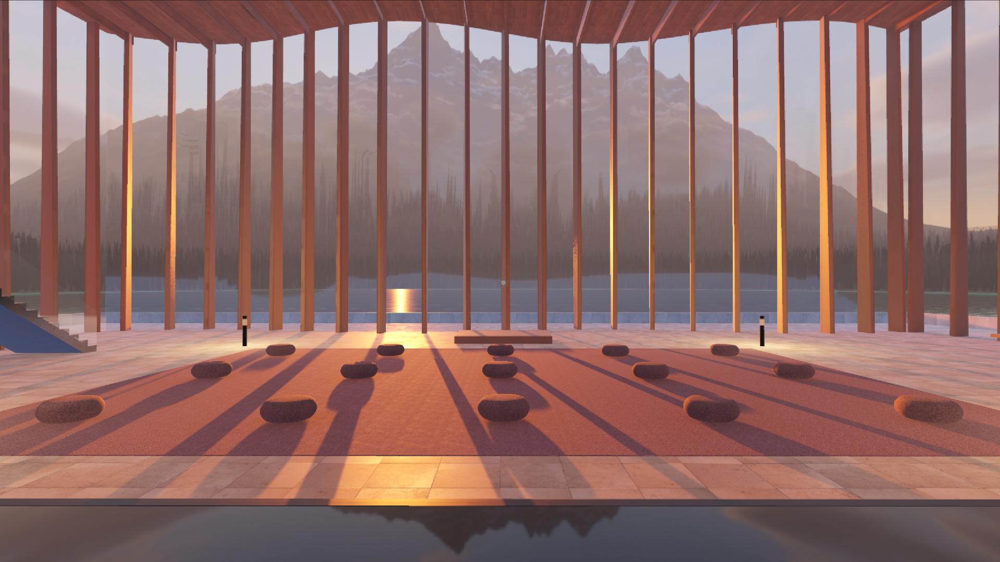
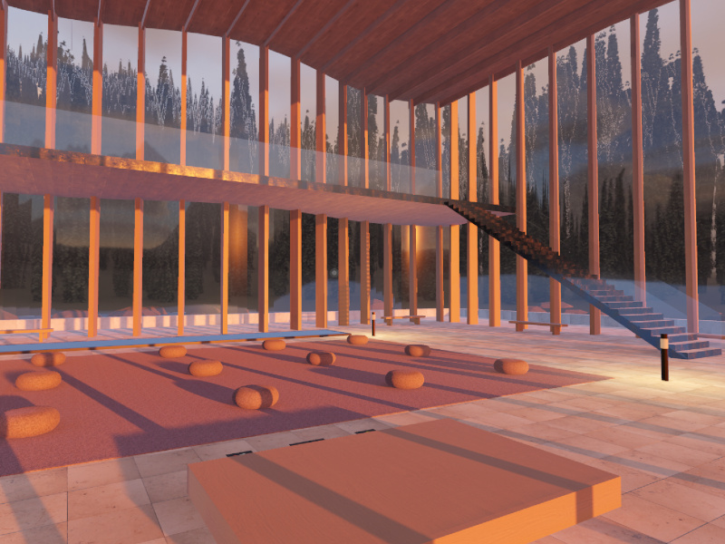
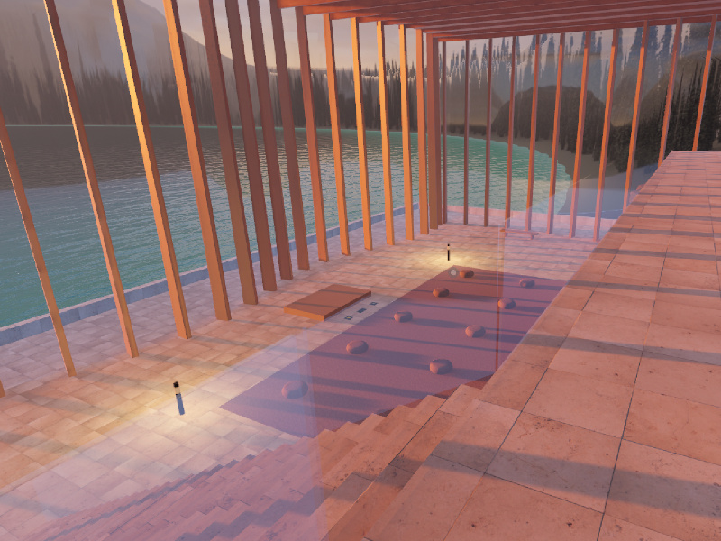
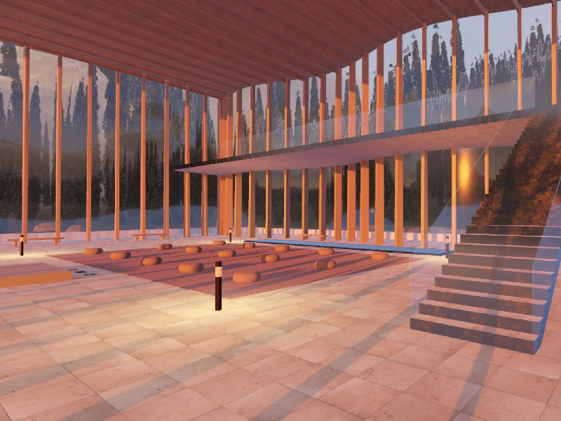

Lakeside Lounge
2026

A tranquil meditation studio built as a VRChat world, standing on piles above a glacial lake in a Banff-like valley at sunset. The 20 × 32 m room rises 12 m under a ribbed oak ceiling, with floor-to-ceiling glass on all four walls and a bowed curtain wall of 68 vertical white-oak fins, an interior loosely translated from the Integral House in Toronto. Glass and warm oak beams bring the surrounding landscape straight into the space, for a serene setting for reflection, meditation, and quiet connection with nature.
The building was generated procedurally from a single Python constants file: the curtain wall's bow, the fins' taper and spacing, and the ceiling ribs all follow a sine displacement along the wall's arc rather than being modelled by hand. The surrounding mountains, forest, and lake were rendered separately as one 8K panorama in Cycles and projected onto a skydome instead of kept as real geometry, since the alpine backdrop alone runs past a billion triangles at building scale. Light and texture carry the room: a low sunset sun rakes through the glass, warm bronze accent lamps sit at floor level, and honed limestone, white-oak veneer, and blackened steel are set against the mauve wool felt practice area.


